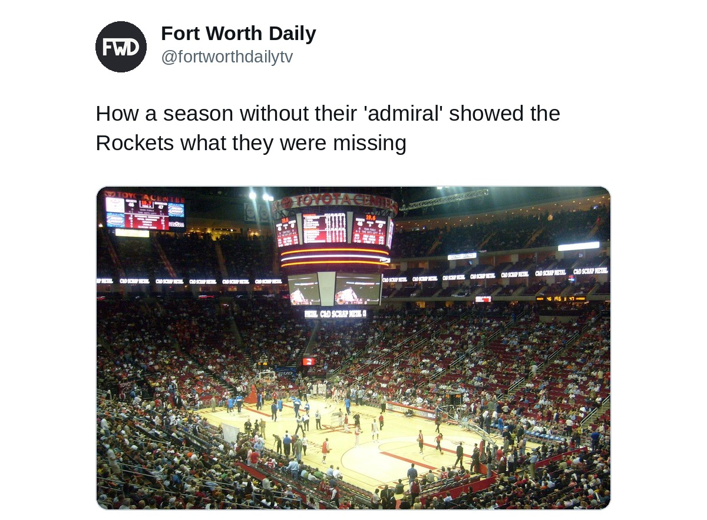

A healthy Fred VanVleet is commanding the surging Rockets after an ACL injury derailed his 2025-26 season.

👍 ❤️ 😮 ✅ written to disk (dry run)
story + scoring
{
"source": "ESPN NBA",
"kind": "rss",
"score": 0.682,
"relevance": 2,
"url": "https://www.espn.com/nba/story/_/id/50524821/nba-houston-rockets-fred-vanvleet-injury-comeback",
"image_license": "wikimedia-cc",
"image_credit": "Photo: Original uploader was Hequalstohenry of en.wikipedia via Wikimedia Commons (Public domain)"
}Officers stopped the pursuit due to the risk to the driver and other motorists. A short time later, police received a call about a car that had crashed into a business.
A driver is under arrest after crashing a car into a business along Brown Trail in Bedford, police said. The crash happened overnight in the 2700 block of Brown Trail.
👍 ❤️ 😮 ✅ written to disk (dry run)
story + scoring
{
"source": "NBC 5 DFW",
"kind": "rss",
"score": 0.5655,
"relevance": 2,
"url": "https://www.nbcdfw.com/news/local/driver-arrested-after-car-crashes-into-bedford-business-following-pursuit/4109509/",
"image_license": "card",
"image_credit": "Card: FWD"
}West Ham was relegated from the English Premier League last spring and is currently battling for elevation in the Championship, England’s second division. Two squads that have recently competed in the English Premier League will compete in the Dallas Cup in 2027, the oldest youth soccer tournament in the United States.
The Hammers lifted the trophy in 1992.
👍 ❤️ 😮 ✅ written to disk (dry run)
story + scoring
{
"source": "NBC 5 DFW",
"kind": "rss",
"score": 0.4647,
"relevance": 2,
"url": "https://www.nbcdfw.com/news/sports/english-football-clubs-west-ham-crystal-palace-returning-to-dallas-cup-in-2027/4107856/",
"image_license": "card",
"image_credit": "Card: FWD"
}